Architecture¶
6. Plane separation and staleness windows¶
Trust boundaries (diagram 03)¶
Each trust zone is one cluster and its own SPIFFE trust domain (ZT-24, SRS 3.1.2). The two domains meet only through the attested channel and a TRAIN verdict; they are never merged. The management-plane components whose placement this section records, the SPIRE server and the OpenTelemetry Collector, run in the same cluster as the zone's data-plane workloads and therefore inside the zone's trust domain: the separation between the planes is a namespace and policy boundary, not an identity boundary. Data-plane calls into the management plane are denied by default at both the NetworkPolicy layer and the mesh AuthorizationPolicy layer, and are permitted only along the paths the allow matrix below lists, which are named mTLS pairs and the declared observability export under ZT-26 (SRS 3.1.2). The management-plane components whose placement is not yet recorded, TRAIN (TCR and TSPA), the TSA policy engine and OCM, are drawn outside both zones under the same rule until their placement is decided; the four provisional rows of the allow matrix are theirs. A workload without an SVID or running an unsigned image cannot join or start.

Source: diagrams/03-trust-boundaries.mmd.
Management-plane roles (ZT-55)¶
ZT-55 (SRS 3.3) names five management-plane components that must be strictly separated from the data plane network. In this demonstrator they are reachable from the data plane only through the paths the allow matrix below permits explicitly at both layers; those paths are dedicated control channels (named mTLS pairs), except the observability export path, which is a declared bypass under ZT-26. The table binds each of them, in the order the requirement names them, to the service or services that implement it in this demonstrator. The allow matrix below lists the permitted paths toward these roles and refers to the roles by name, so coverage of the five components can be checked here before the permitted paths are read.
Every role in the table below is bound to at least one service; none is unimplemented.
The supply boundary records who provides the software, not who deploys or operates it. Project-built means this project provides the software: it builds or packages it and owns its configuration. Client-supplied means the software is provided to the demonstrator by the client as part of the XFSC stack; a client-supplied role stays client-supplied when this project deploys and operates it, as it does for all three below. The column is kept because client-supplied software is the demonstrator's largest external dependency: its provenance, its versions and its interfaces are fixed outside this project. It says nothing about enforcement. The layer that enforces a path to a role follows network topology — where the destination runs relative to its source — not who supplies the service; see the allow matrix below.
| ZT-55 role | Implementing service(s) | Supply boundary | Evidence |
|---|---|---|---|
| Policy Engine | TSA policy engine (Trust Services API) | Client-supplied | External XFSC components |
| TRAIN | TCR (trust-list resolution); TSPA (trust-list publication) | Client-supplied | External XFSC components; TSPA in the ZT-35 flow |
| SPIRE control plane | SPIRE server and its controller-manager | Project-built | Workload identity |
| OCM | OCM W-Stack, used by the backend as the credential verification service | Client-supplied | External XFSC components |
| Observability stack | OpenTelemetry Collector, read through Prometheus and Jaeger | Project-built | Operations |
Allow matrix (data plane → management plane)¶
Default DENY at both layers (NetworkPolicy and mesh AuthorizationPolicy). Each ALLOW row below is permitted explicitly at both the NetworkPolicy layer and the mesh AuthorizationPolicy layer, and nothing else reaches the management plane. In this demonstrator, a dedicated control channel in the ZT-55 sense is a named, mTLS-authenticated source → destination pair; the rows marked named pair are such channels toward the roles they name. The observability export row is not a named pair: it is permitted as a declared bypass under ZT-26, defined below the matrix. The ZT-55 role column names the role from the table above that the destination serves. Any management-plane destination without its own row is denied by the catch-all row.
ZT-55 (SRS 3.3) requires the separation to be enforced at both the Kubernetes network policy layer and the service mesh layer, so every row states its disposition at both. The enforcement column holds layers only: for each row it gives the NetworkPolicy disposition and the mesh AuthorizationPolicy disposition, and nothing else. A permitted path is permitted explicitly at both layers; a denied path is denied at both.
On every permitted path the mesh waypoint is the single L7 enforcement owner, and the NetworkPolicy layer is held to L3/L4 for that path. Two L7 decision points on one path would make the fail-closed behaviour ZT-55 depends on non-deterministic, so each path has exactly one (ADR-0001). The place of record for the assignment is the mesh configuration, per path. No mesh configuration is deployed yet, so until one is, this column declares the intended assignment rather than reflecting a configured one. Once the configuration is deployed, this matrix reflects that record and does not replace it. If the mesh configuration changes the owner of a path, this column changes with it.
The test column names the scenario tag that proves each row, in the form the acceptance harness requires: the requirement row and its acceptance test identifier (Tags). A tag is named here even where its scenario is not yet written — the matrix is the specification that scenario is written from, and the traceability sheet reports the row as uncovered until it exists.
| From data-plane workload → | ZT-55 role | Allowed? | Enforcement (NetworkPolicy; mesh AuthorizationPolicy) | Test |
|---|---|---|---|---|
| PDP adapter → TSA policy engine | Policy Engine | ALLOW (mTLS, named pair) | NetworkPolicy: ALLOW, L3/L4 only; mesh: ALLOW, L7 owner (waypoint) | @ZT-55 @BDD-ZT-055 |
| aTLS gateway → TCR resolve | TRAIN (resolution) | ALLOW (named pair) | NetworkPolicy: ALLOW, L3/L4 only; mesh: ALLOW, L7 owner (waypoint) | @ZT-55 @BDD-ZT-055 |
| workloads → OTel collector (export only) | Observability stack | ALLOW (declared bypass, ZT-26) | NetworkPolicy: ALLOW, L3/L4 only, egress rule limiting the source to the collector's export port (ZT-26); mesh: ALLOW, L7 owner (waypoint) | @ZT-55 @BDD-ZT-055 |
| backend → verification service | OCM | ALLOW (named pair) | NetworkPolicy: ALLOW, L3/L4 only; mesh: ALLOW, L7 owner (waypoint) | @ZT-55 @BDD-ZT-055 |
| any data-plane workload → TSPA (trust-list publication) | TRAIN (publication) | DENY | NetworkPolicy: DENY; mesh: DENY | @ZT-55 @BDD-ZT-055 |
| any data-plane workload → SPIRE server | SPIRE control plane | DENY | NetworkPolicy: DENY; mesh: DENY | @ZT-55 @BDD-ZT-055 |
| anything else data → management: any management-plane destination without its own row, including other management components (for example ArgoCD, OpenBao, Harbor, estserver, admin APIs) | any management-plane destination not listed above | DENY | NetworkPolicy: DENY; mesh: DENY | @ZT-55 @BDD-ZT-055 |
Same-cluster assumption. The layers named above assume that the destination runs in the same cluster as the source workload, where both are policies between namespaces. The enforcing mechanism follows network topology rather than who supplies a service: a destination in another cluster is reached through an egress rule, and one outside the estate through a different control again. Placement is recorded for the SPIRE control plane and the observability stack only, so four rows are provisional: PDP adapter → TSA policy engine, aTLS gateway → TCR resolve, backend → verification service, and the denied row any data-plane workload → TSPA. The denied row is included because a denial across a cluster boundary rests on a different mechanism than one within a cluster. Once their destinations are placed, these rows will also name their egress rule.
Declared bypass. A declared bypass is a path exempted from the Zero Trust Connector under ZT-26 (SRS 3.1.2). ZT-26 exempts protocols and endpoints not related to inter-connector communication; the exempt classes are name resolution, observability export and cluster administration. A declared bypass is listed with its reason and remains subject to its own ingress and egress controls. It bypasses the Connector only — not the mesh and not the network layer — and the term carries no other meaning in this section. The observability row above and the name-resolution row under Supporting services are the two paths that carry it.
This matrix is not the ZT-26 bypass list, which is a separate reviewed artefact; the rows here that carry a declared bypass are entries in that list, not the list itself. Cluster administration is an exempt class with no row here because administrative traffic does not originate in a data-plane workload, and the domain of this matrix is paths from the data plane to the management plane. A data-plane workload that reaches an administrative endpoint remains denied by the catch-all row.
Out of scope: collection initiated from the management plane. Paths initiated from the management plane toward a data-plane cluster, such as metric collection pulled by the observability interfaces, are outside this matrix. ZT-55 governs reachability from the data plane, so the matrix models that direction only.
Each row of the matrix is justified below. A permitted row states the requirement that needs the path, which end initiates it, and the surface it is limited to. A denied row states what reaching the destination would give a compromised data-plane workload; the catch-all row states the role it plays in the matrix.
- PDP adapter → TSA policy engine — Policy Engine. ZT-20 (SRS 3.1.1) requires the connector's guard to base its enforcement on Rego policies and the TSA policy engine, and ZT-52 (SRS 3.3) allows no access to a protected resource without a valid, verified policy decision. The engine runs as its own service, so the enforcement point obtains every decision over the network, and the PDP adapter is its route to the engine: without this path the enforcement point cannot obtain a decision, and every guarded request is denied. The PDP adapter initiates each call; the engine answers and never calls into the data plane over this path. The surface is policy evaluation only — a decision request out and its verdict back — not the administration of the policies the engine evaluates.
- aTLS gateway → TCR resolve — TRAIN (resolution). ZT-35 (SRS 3.1.3) requires any endpoint that establishes attested TLS connections to resolve its peers' trusted hashes from TRAIN, so the aTLS gateway needs a read path to TCR at run time. Resolution is needed when a channel is established: the gateway fetches the peer's hash from TRAIN and proceeds only if it matches the value in the peer's attestation report, so without this path no attested channel between the zones can be established. The gateway initiates; TCR answers and never calls into the data plane over this path. The surface is resolution — a peer's hash is looked up, never written. Publication, the write side of TRAIN, is a separate row and is denied.
- workloads → OTel collector — Observability stack. ZT-27 (SRS 3.1.2) requires events to be exported from the cluster in a standard format and names the OpenTelemetry Collector as the primary aggregation and export tool, so data-plane workloads must be able to reach the collector. ZT-26 (SRS 3.1.2) places observability APIs among the endpoints that must bypass the Zero Trust Connector, and requires them to use their own appropriate ingress and egress configuration instead; that is the declared bypass this row carries. ZT-52 (SRS 3.3) requires control-plane failures to be detected within 30 seconds and alerted through the observability stack, and a failure the data plane observes, such as a policy engine that no longer answers, reaches that alerting only over this path. The row is therefore not a dedicated control channel, as the definition above the matrix says, and it is not an exception granted against ZT-55 (SRS 3.3) either: it is a path these requirements compel, and denying it would break ZT-27 and ZT-52 without adding to the separation ZT-55 requires.
What these requirements need is narrower than reaching the observability stack, and the row permits only that. The source is admitted by the workload identity it holds, its SVID. The destination is the collector alone, not Prometheus, Jaeger or any other part of the stack. The surface is the collector's export port, to which the egress rule in the enforcement column limits the source. The workload initiates, and telemetry travels outward only: the path lets a workload hand its telemetry to the collector and opens no route back into the stack, to the data it holds or to its configuration. None of this depends on which component takes the L7 decision on the path, so a change of mesh mode leaves the justification standing. - backend → verification service — OCM. ZT-40 (SRS 3.1.5) bases access on credentials from the OCM W-Stack, and ZT-51 (SRS 3.3) requires revocation status to be checked at every credential verification, failing closed when it cannot be. A verdict held from an earlier verification cannot stand in for a new one: it records the credential's status when that verification ran, so a credential revoked since would still pass. Each new verification therefore reaches the service, and the staleness matrix bounds how long one verification's outcome is relied on. The backend initiates; the verification service answers and never calls into the data plane over this path. The surface is credential verification — a presentation out and its verification result, revocation status included, back — not the issuance or revocation of credentials. - any data-plane workload → TSPA — TRAIN (publication). The two TRAIN rows carry opposite verdicts on purpose. The resolution row above rests on ZT-35 (SRS 3.1.3). The same requirement assigns publication to the endpoint's CI/CD pipeline, which uploads the hash on deployment; no data-plane workload publishes. Publication writes the trust anchors that every peer relies on, so leaving it reachable from the data plane would let a compromised data-plane workload alter trust decisions, which ZT-55 forbids. Publication therefore stays denied from the data plane and is reached only through the pipeline's publication path. - any data-plane workload → SPIRE server — SPIRE control plane. Under ZT-24 (SRS 3.1.2) the SPIRE server issues the SVIDs by which every other row names its source and destination, and holds the registration entries that decide which workload receives which identity. A compromised data-plane workload that reached it could seek identities it was never issued, or alter the registrations that assign them; every named pair in this matrix, and the identity that admits the observability row, would then rest on identities the attacker controls. That is the access to the management plane that ZT-55 (SRS 3.3) requires a compromise of the data plane never to grant. The denial does not cut a workload off from its own identity. A workload receives its SVID by the node-local path, from the SPIRE agent on its node through a mounted volume (workload identity), and the agent, which is part of the SPIRE deployment rather than a data-plane workload, is what talks to the server. The path this row denies is the one from a workload to the server itself. - anything else data → management — any management-plane destination not listed above. The five roles ZT-55 (SRS 3.3) names are not the whole management plane: other management components such as ArgoCD, OpenBao, Harbor, estserver and administrative APIs sit there too. This row is what makes the matrix a closed statement about the management plane rather than a list of examples: every management-plane destination is either named by a row above or denied by this one, and none is denied merely by being left out. It is also what the plane-separation test asserts for any management-plane destination it probes and does not find listed: that destination is unreachable at both layers.
Supporting services (outside the management plane)¶
The data plane also depends on two services that are outside the management plane. ZT-55 (SRS 3.3) characterises both planes with parenthetical examples rather than enumerating them, and its operative sentence states the test: compromise of the data plane must not grant any access to management-plane components. A destination is therefore outside the management plane when reaching it grants no ability to alter what the system runs, trusts or holds. Absence from the five components ZT-55 lists is not the criterion. The catch-all row above denies management components that are equally absent from that list, and it can do so without contradicting this subsection because both decide by what reaching a destination grants, not by whether its name is on the list. Each service below is justified by its own requirement rather than by this category, and none is an exception to ZT-55.
Each is permitted explicitly under the same default DENY at both layers as the matrix above, and any other destination without a row is denied. They are not all named mTLS pairs: a service whose traffic the mesh cannot govern is permitted by a rule at the network layer instead, and its row says so. Where the mesh does govern a path, the mesh waypoint is its L7 owner as in the matrix above.
These rows are proved by the acceptance families of their own requirements (see the scenario inventory), not by the plane-separation test, so this table carries no test column.
This subsection exists because the allow matrix covers destinations in the management plane: a permitted destination that is not a management-plane component has nowhere else to be recorded, and a reader finding no row for it would apply the catch-all denial to it.
| From data-plane workload → | Supporting service | Allowed? | Enforcement (NetworkPolicy; mesh AuthorizationPolicy) |
|---|---|---|---|
| aTLS gateway → cmcd | attestation for the aTLS channel | ALLOW (named pair) | NetworkPolicy: ALLOW, L3/L4 only; mesh: ALLOW, L7 owner (waypoint) |
| workloads → DNS | name-resolution infrastructure | ALLOW (declared bypass, ZT-26) | NetworkPolicy: ALLOW, port 53 only; mesh: not applicable — DNS is not mTLS traffic, so the mesh cannot govern it |
- aTLS gateway → cmcd — attestation for the aTLS channel. cmcd is the per-zone attestation service beside the gateway. The attested channel between the zones requires both ends to present evidence of the software they run, bound to the TLS connection it is presented on (trust boundary between the zones). That evidence comes from CMC (ZT-31; specifications): the SRS grounds the bidirectional remote attestation feature (SRS 5.2) in the CMC aTLS protocol (SRS 2.6.1), and its appendix on attested TLS refers to the REQUIRED CMC daemon (SRS 6). cmcd is the per-zone CMC service that receives the pipeline-signed reference metadata (ZT-71) the evidence is checked against. Without this path the gateway cannot establish attested TLS as ZT-35 (SRS 3.1.3) requires.
- workloads → DNS — name-resolution infrastructure. DNS is cluster infrastructure. Data-plane workloads reach the destinations permitted above by service name, so without name resolution none of those paths can be used. The path is a declared bypass under ZT-26, in the sense defined above, and is permitted by a NetworkPolicy rule limited to port 53. It is not a named mTLS pair: DNS is not mTLS traffic, so the mesh layer does not apply and the network layer imposes the restriction.
Staleness matrix¶
Maximum window in which a revoked or rotated artefact still authorises. The allow matrix governs which management-plane decisions may travel to the data plane; the staleness matrix bounds how long they take to arrive. The staleness matrix is deliberately broader than the allow matrix: a row is in scope because its freshness bounds an authorisation, not because its producer is one of the five components ZT-55 (SRS 3.3) names, so rows for artefacts outside those five are not to be removed as inconsistencies. These values are what §6 commits to, and configuration has to meet them.
The test column names the scenario tag that proves each row's window, in the form the acceptance harness requires: the requirement row and its acceptance test identifier (Tags). A tag is named here even where its scenario is not yet written — the matrix is the specification that scenario is written from, and the traceability sheet reports the row as uncovered until it exists.
| Artefact | Rotation/lifetime | Cache or held outcome | Max stale-authorisation window | Enforced by | Test |
|---|---|---|---|---|---|
| SVID | 1 h TTL | in-process | ≤ 1 h | mesh | @ZT-24 @BDD-ZT-024 |
| Connector issuer JWKS | rotate on demand | guard cache 5 min | ≤ 5 min | connector guard | @ZT-22 @BDD-ZT-022 |
| Access token | 300 s lifetime | — | ≤ 300 s after revocation of its basis | guard and token store | @ZT-22 @BDD-ZT-022 |
| Policy bundle | poll 60 s | TSA cache | ≤ 60 s | TSA policy engine | @ZT-20 @BDD-ZT-020 |
| Trust list / measurement | TTL 300 s | TCR/gateway | ≤ 300 s + channel lifetime 15 min ⇒ ≤ ~20 min for an established channel (bounded by channel re-establishment) | aTLS gateway | @ZT-35 @BDD-ZT-035 |
| Credential revocation | checked per verification | outcome relied on 120 s | ≤ token lifetime + outcome reliance period; in force ≤ 300 s + 120 s | backend and token store | @ZT-51 @BDD-ZT-051 |
- Trust list / measurement. The window bounds the locally held copy from the moment the published list changes, not the time until it changes upstream: the trust list is not provisioned by this project.
- Connector issuer JWKS. The connector guard validates token signatures against the connector's own published key set, so that is the artefact this row bounds. The key set is part of the connector's token machinery, which ZT-22 (SRS 3.1.1) governs, and the row carries that requirement's tag as its own basis: a key set stale past a rotation makes token validation fail.